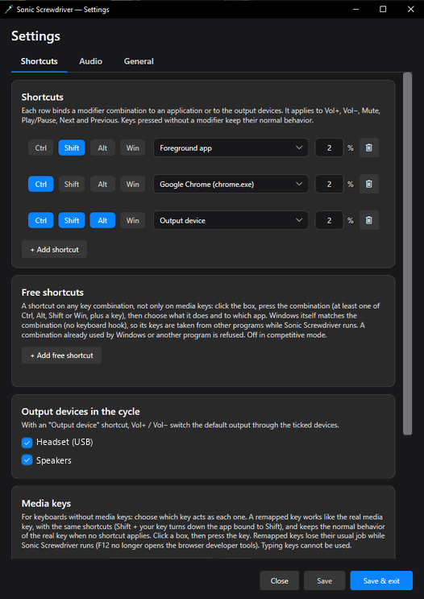
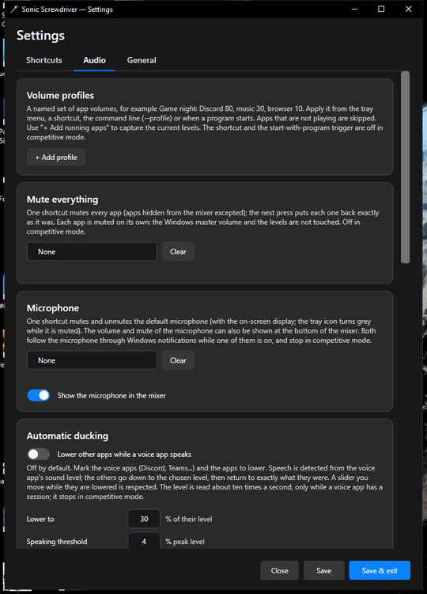
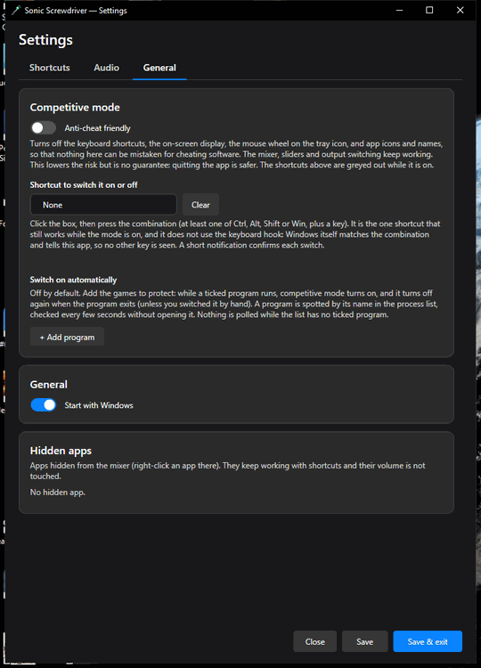
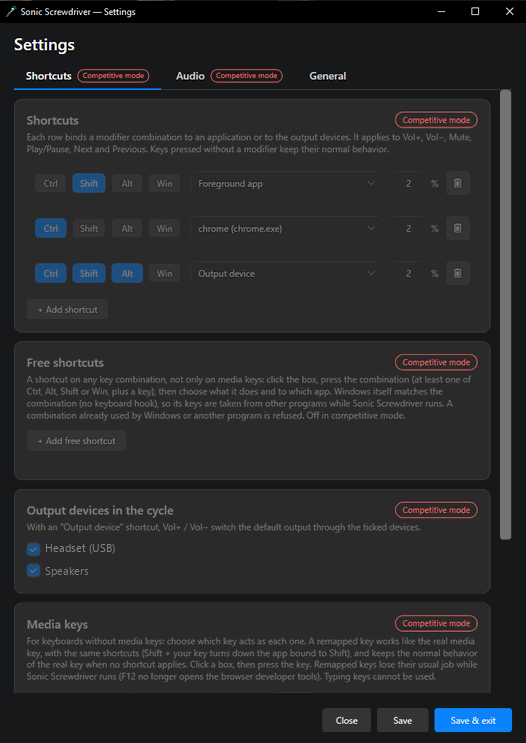

Features
A lightweight per-app volume mixer for Windows that lives in the notification area, with modifier + media key shortcuts that act on one specific app instead of the whole system.
Jump to: Mixer · Shortcuts · Free shortcuts · Remap media keys · Pin and hide · Profiles · Ducking · Streamer mode · Microphone · Mute everything · Maximum volume · Routing · Device priority · Now playing · Command line · Tray menu · On-screen display · Competitive mode · Light
Per-app mixer
Click the tray icon to see every output device, its volume, and the apps playing on it. Each app gets its own slider and mute button, and the list updates live. You can set the default output from the mixer, or right-click an app to send it to another output. Scroll over the tray icon to change the master volume, or over a mixer row to change that app.

Shortcuts on your media keys
Bind a modifier combination (Ctrl, Alt, Shift, Win, or any mix) to a target. The same combination then drives Vol+, Vol−, Mute, Play/Pause, Next and Previous:
- a specific app (
spotify.exe,discord.exe, ...): volume, mute and media control for that app only; - the foreground app: whatever window has focus;
- output devices: Vol+ / Vol− cycle the default output through the devices you choose.
A media key without a modifier, or with an unbound combination, keeps its usual Windows behavior. The default shortcut is Ctrl + media keys on the foreground app.
Play/Pause, Next and Previous only reach apps that register with Windows media controls (Spotify, browsers, most players). When an elevated (administrator) window has focus, Windows does not pass keys to the app unless it runs elevated too.

Free shortcuts
Not limited to media keys: record any combination (Ctrl, Alt, Shift or Win plus any key, for example Ctrl + Alt + F8) and choose what it does (Vol+, Vol−, Mute, Play/Pause, Next, Previous), to which app (a specific app, the foreground app or the output devices) and the volume step.
These use the Windows RegisterHotKey function: Windows matches the combination itself, so there is no extra keyboard hook, and the keys of a combination are taken from other programs only while it is registered. A combination already used by Windows or another program is refused with a message in the settings. Off in competitive mode.
Remap the media keys
No media keys on your keyboard (compact keyboards, laptops where they sit behind Fn)? In the settings, choose which key acts as Vol+, Vol−, Mute, Play/Pause, Next and Previous (for example F10, F11, F12). A remapped key works exactly like the real one: Shift + F11 turns down the app bound to Shift, a bare F11 lowers the master volume.
A remapped key loses its usual job while the app runs, and the remaps are off in competitive mode (they need the keyboard hook).
Pin or hide apps
Right-click an app in the mixer to pin it to the top of its device list (pinned apps keep a stable order) or hide it from the mixer. A hidden app keeps working with your shortcuts and its volume is not touched; the Hidden apps card in the settings lists them with a Show again button.
Volume profiles
A named set of app volumes (and optionally the master volume), for example “Game night”: Discord 80, music 30, browser 10. Apply it from the tray menu, a shortcut, the command line, or automatically when a program starts. Apps that are not playing are skipped. In the settings, “Add running apps” captures the current levels.

Automatic ducking
Off by default. Mark a voice app (Discord, Teams...) and the apps to lower: while the voice app speaks, the others go down to the level you choose, then come back to exactly what they were. A slider you move in the meantime is respected.
Streamer mode
The reverse of ducking, off by default. Tick the apps to lower (a game, music...): while you speak into the default microphone they go down to the level you choose, then come back to exactly what they were. A threshold (5 % by default) ignores room noise, and delays avoid pumping on pauses. It works together with automatic ducking: the levels always come back to what you had.
Microphone
A shortcut mutes and unmutes the default microphone (the tray icon turns grey while it is muted), and the mixer can show the microphone's volume and mute.
Mute everything
One shortcut mutes every app, the next press restores each app's previous state exactly. The Windows master volume is not touched.
Maximum volume per app
A cap for an app (a browser at 40 %): sliders, shortcuts, profiles and commands stop at it, and an app that goes above it by itself is brought back.
Remembered routing
“Discord always on the headset, Spotify on the speakers”: a rule is applied when the app's sound starts, and skipped when the device is not plugged in.
Output device priority
An ordered list of devices (headset, then speakers, then monitor): when devices come and go, the default output becomes the first one of the list that is plugged in. An output you pick by hand is kept until the first plugged-in device of the list changes.
Now playing
Optional. Each mixer row shows the title and artist of what the app plays, with Previous, Play/Pause and Next buttons (read only while the mixer is open).
Command line
SonicScrewdriver.exe --set spotify.exe 30, --profile "Game night", --toggle-competitive... for Stream Deck, Touch Portal or AutoHotkey. See Command line for the full table and the exit codes.
Tray tooltip and menu
The tray tooltip and the right-click menu show the current output device and your shortcuts. The menu is drawn like the mixer (same theme, above the taskbar, closes on Escape or a click elsewhere, usable with the arrow keys) and holds Settings, the Competitive mode switch and Quit.
On-screen display
A small, non-intrusive overlay shows the app icon, its name and the new level, without stealing focus. It is off in competitive mode.

Competitive mode
One switch turns off everything an anti-cheat could flag (shortcuts, overlay, process lookups) for online games, with an optional shortcut to flip it. The settings grey out what it switches off and mark the cards and tabs concerned with a red “Competitive mode” label. Details, limits and the list of tested games: Games and anti-cheat.


Settings window
Right-click the tray icon, then Settings. The window has three tabs (Ctrl + Tab or the arrow keys switch between them): Shortcuts, Audio and General, each made of one card per topic. Save applies the settings and keeps the window open; Save & exit (Enter) applies them and closes the window. Settings are stored in %APPDATA%\SonicScrewdriver\settings.json.
Light
Around 20 MB of RAM and no CPU at idle; everything is event driven. The only timers: the optional automatic competitive mode and program-start profiles (a process-name check every 5 seconds, only if you list a program), automatic ducking (a sound-level check ten times a second, only while a voice app is running) and streamer mode (the same check on the microphone, only while it is on and an app is ticked). Every one of the newer observers (ducking, streamer mode, microphone, routing, output priority, now playing, the maximum-volume watch) costs nothing when its feature is off, and stops in competitive mode.
Limits
- Browsers: all tabs and installed web apps of a browser share a single volume, because the browser plays all their audio through one process. Sonic Screwdriver cannot set one tab alone: use a browser extension for a per-tab volume, or play in two different browsers (see the FAQ).
- Media control: Play/Pause, Next and Previous only reach apps that register with Windows media controls (Spotify, browsers, most players).
- Administrator windows: when an elevated window has focus, Windows does not pass keys to the app unless it runs elevated too.
- Undocumented APIs: changing the default device and routing an app to an output use undocumented Windows interfaces (the same ones EarTrumpet uses), so a new Windows build can break them.